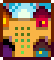

Types of Farms
There are 8 different farm maps that you can choose from when you create a new save. Each farm has a differnet number of tillable, and build only tiles. The unique features offer different benefits that help with the development of their associated skill.
| Name & Menu Icon | Tillable Tiles | Build Only Tiles | Associated Skill |
|---|---|---|---|
Standard Farm |
3427 | 235 | Farming |
Riverland Farm |
1578 | 516 | Fishing |
Forest Farm |
1413 | 1490 | Foraging |
Hill-Top Farm |
1648 | 930 | Mining |
Wilderness Farm |
2131 | 444 | Comabt |
Four Corners Farm  |
2952 | All buildable tiles are also tillable. | Multiplayer |
Beach Farm |
2700 | 1928 | Foraging and Fishing |
Meadowlands Farm |
2066 | All buildable tiles are also tillable. | Farming |